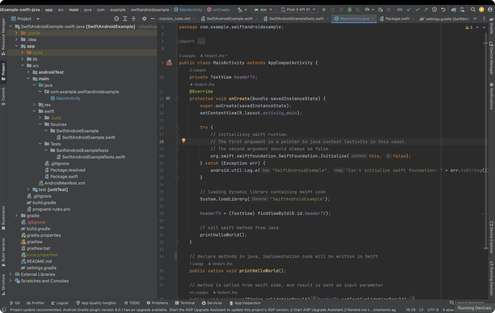
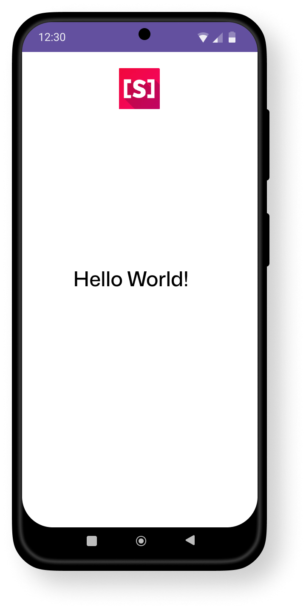

Getting Started with Swift for Android
1. Prerequisites
Before you begin Swift development for Android, make sure you have the following tools installed:
- Xcode (For macOS): If you don't have Xcode installed, it is recommended to install it from the Mac App Store. Xcode includes Swift, and the installation of Xcode will automatically include Swift as part of the development tools.
- Android Studio: Android Studio is the official integrated development environment (IDE) for Android app development. You can download Android Studio from the official website: Android Studio Download.
- SCADE IDE (Optional): If you are interested in using Scade for Swift development, you can download it from SCADE's official website: Scade Download.
2. How to Install Swift for Android
For macOS
Before setting up Swift for Android, ensure that you have Android Studio installed on your macOS. Follow these steps:
- Install Android Studio:
- Download Android Studio.
- Run the downloaded installer and follow the setup instructions.
- Launch Android Studio eand complete the initial configuration, including the installation of the Android SDK.
- Install Android NDK, by clicking on Tools -> SDK Manager -> SDK Tools tab. Select the NDK(side by side) and CMake checkboxes. Click OK to download and install.
- Install Android Emulator if you want to run on Android emulators
- Install Swift Toolchain for Android:
- Download Swift Toolchain for Android
- Run the downloaded installer and follow the setup instructions.
- Verify Swift Toolchain (Already Included in SCADE IDE):
In the terminal, check with the below commands if Swift Toolchain for Android is installed or not. The following command should print the installed Swift Toolchain version:
scd list-installed
For Linux
Currently Swift for Android is available for macOS only. It will be available for Linux very soon.
3. Next Steps: Create a Hello World App on Android Studio using Swift
Refer here to quickly create and run the app on Android Studio using Swift.
How to Create a Hello World Application
- Open Android Studio.
- Begin a new project by selecting "File" > "New" > "New Project."
- Choose a suitable template; for this guide, select "Empty Views Activity."
- Note: Ensure you choose "Empty Views Activity," not "Empty Activity."
- Provide project details such as name (e.g., SwiftAndroidExample) and package name (e.g., com.example.myapplication).
- Click "Next" to proceed.
Initializing Swift Package Manager (SPM) Project
- To create a new Swift Package Manager (SPM) project within the app/src/main/swift subdirectory, run the following commands in the terminal:
cd SwiftAndroidExample/app/src/main/swift
swift package init --name SwiftAndroidExample
It will set up a new SPM project named SwiftAndroidExample inside the swift subdirectory. This project structure allows you to efficiently manage Swift dependencies and build your Swift code as a separate module within your Android Studio project.

Configure Gradle in build.gradle
- In your Android project, access the app/build.gradle file.
- Enhance the android section by adding:
android {
sourceSets {
main {
jniLibs.srcDirs = ["lib"]
}
}
}
This informs Gradle to locate JNI libraries in the lib subdirectory.
- In the dependencies section, include:
In the dependencies section, include:
This line instructs Gradle to include .jar libraries in the resulting APK.
- At the end of build.gradle, insert the following custom Gradle task:
task buildSwiftProject(type: Exec) {
commandLine 'scd',
'archive', '--type', 'android',
'--path', 'src/main/swift',
'--platform', 'android-arm64-v8a',
'--platform', 'android-x86_64'
}
tasks.whenTaskAdded { task ->
if (task.name == 'assembleDebug' || task.name == 'assembleRelease') {
task.dependsOn buildSwiftProject
}
}
Initialize Swift Runtime and Load JNI Library
- In MainActivity.java, add Swift runtime initialization in the onCreate method:
@Override
protected void onCreate(Bundle savedInstanceState) {
super.onCreate(savedInstanceState);
setContentView(R.layout.activity_main);
try {
org.swift.swiftfoundation.SwiftFoundation.Initialize(this, false);
} catch (Exception err) {
android.util.Log.e("Swift", "Can't initialize Swift Foundation: " + err.toString());
}
// Continue with your activity code
}
- Load the JNI library using:
System.loadLibrary("SwiftAndroidExample");
Java Methods Calling Swift Implementation
In your Android application, you can declare Java methods that serve as bridges to Swift code. The implementation of these methods will be written in Swift, allowing seamless integration between the two languages. Here's an example:
public class MainActivity extends AppCompatActivity {
// Declare a native method in Java, with the implementation in Swift
public native void printHelloWorld();
// This method is called from Swift code, and the result is sent as an input parameter
public void printText(String validationResult) {
// Assuming headerTV is a TextView in your layout
headerTV.setText(validationResult);
}
// ... Rest of your MainActivity code
}
The Swift implementation of printHelloWorld and the Swift code calling printText will complete the interaction between Java and Swift, providing a seamless integration of functionalities in your Android application.
Swift Implementation for Java Methods
The MainActivity_printHelloWorld function is annotated with @_silgen_name to set the native name for the function when called from Java. It takes the JNI environment (env) and the Java activity (activity) as parameters. Inside this function, you create a JObject wrapper for the Java activity and call the updateTasksList function to perform the desired interaction with the Java code.
import Dispatch
import Foundation
import Java
// Function to update tasks list in Java
public func updateTasksList(activity: JObject) {
// Call the Java method "printText" with the message "Hello World!"
activity.call(method: "printText", "Hello World!")
}
// Use @_silgen_name attribute to set native name for a function called from Java
@_silgen_name("Java_com_example_swiftandroidexample_MainActivity_printHelloWorld")
public func MainActivity_printHelloWorld(
env: UnsafeMutablePointer<JNIEnv>, activity: JavaObject
) {
// Create JObject wrapper for the activity object
let mainActivity = JObject(activity)
// Call the Swift function to update tasks list in Java
updateTasksList(activity: mainActivity)
}
This Swift code demonstrates the integration of Swift functions with Java methods, allowing for bidirectional communication between Swift and Java in your Android application.
Run the Hello World App
Run the Android Appusing Swift’s code like you would run any Android project in Android Studio, on Android Emulator/Physical device. You should be able to see Hello World.
Source Code: Please find the source code of Hello World App(Swift for Android) here
Go Further
Ready to dive deeper? Here are some hand-picked resources covering various Swift features.
Implement RecyclerView using Swift PM libraries
Implement RecyclerView using Swift PM libraries
Implement RecyclerView using Swift PM libraries
Implement RecyclerView using Swift PM libraries
Implement RecyclerView using Swift PM libraries